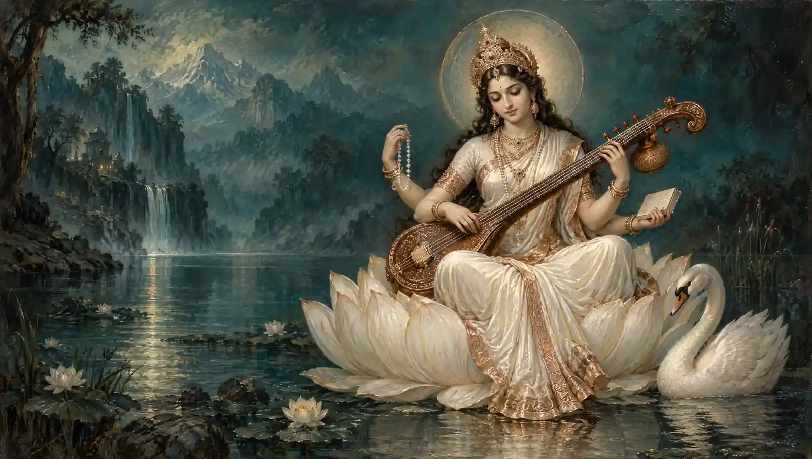

Goddess Saraswati
Saraswati Mantra
For knowledge, speech and music. Chant before you learn.
Begin chantingMeaning & traditionया कुन्देन्दुतुषारहारधवला या शुभ्रवस्त्रावृता
She who is white as jasmine, the moon and a garland of snow, clothed in pure white;या वीणावरदण्डमण्डितकरा या श्वेतपद्मासना ।
whose hands hold the beautiful neck of the veena, who sits on a white lotus;या ब्रह्माच्युतशङ्करप्रभृतिभिर्देवैः सदा पूजिता
who is always worshipped by Brahma, Vishnu, Shiva and the other gods;सा मां पातु सरस्वती भगवती निःशेषजाड्यापहा ॥
may that Goddess Saraswati, who dispels all dullness, protect me.अर्थ
जो कुन्द के फूल, चन्द्रमा और हिम के हार के समान श्वेत हैं, शुभ्र वस्त्र धारण करती हैं, जिनके हाथ सुन्दर वीणा के दण्ड से सुशोभित हैं, जो श्वेत कमल पर विराजमान हैं और ब्रह्मा, विष्णु, शिव आदि देवताओं द्वारा सदा पूजित हैं, वे समस्त जड़ता को दूर करने वाली भगवती सरस्वती मेरी रक्षा करें।
Yā kundendu-tuṣāra-hāra-dhavalā yā śubhra-vastrāvṛtā
She who is white as jasmine, the moon and a garland of snow, clothed in pure white;Yā vīṇā-vara-daṇḍa-maṇḍita-karā yā śveta-padmāsanā
whose hands hold the beautiful neck of the veena, who sits on a white lotus;Yā brahmācyuta-śaṅkara-prabhṛtibhir devaiḥ sadā pūjitā
who is always worshipped by Brahma, Vishnu, Shiva and the other gods;Sā māṃ pātu sarasvatī bhagavatī niḥśeṣa-jāḍyāpahā
may that Goddess Saraswati, who dispels all dullness, protect me.Meaning
May Saraswati, who dispels all dullness, protect me. Radiant as jasmine, moonlight and a garland of snow, she wears white and sits upon a white lotus. Her hands hold the beautiful neck of the veena. Brahma, Vishnu, Shiva and the other gods worship her continually.
Yaa kundendu-tushaara-haara-dhavalaa yaa shubhra-vastraavritaa
She who is white as jasmine, the moon and a garland of snow, clothed in pure white;Yaa veenaa-vara-danda-mandita-karaa yaa shveta-padmaasanaa
whose hands hold the beautiful neck of the veena, who sits on a white lotus;Yaa brahmaachyuta-shankara-prabhritibhir devaih sadaa poojitaa
who is always worshipped by Brahma, Vishnu, Shiva and the other gods;Saa maam paatu sarasvatee bhagavatee nihshesha-jaadyaapahaa
may that Goddess Saraswati, who dispels all dullness, protect me.Meaning (Hinglish)
Kund ke phool, chaand aur him ke haar jaisi shvet Saraswati, shvet vastra pehenti hain aur shvet kamal par viraajti hain. Unke haath sundar veenaa ke dand se sushobhit hain. Brahma, Vishnu, Shiv aur anya devtaa unki sadaa poojaa karte hain. Sab jadtaa door karne waali Bhagavatee meri rakshaa karein.
Short Saraswati mantra
ॐ ऐं सरस्वत्यै नमः ॥
Om, aim. Salutations to Goddess Saraswati.अर्थ
देवी सरस्वती को नमस्कार। “ऐं” उनका बीज मंत्र है, जो ज्ञान और वाणी से जुड़ा है।
Oṃ aiṃ sarasvatyai namaḥ
Om, aim. Salutations to Goddess Saraswati.Meaning
Salutations to Goddess Saraswati. “Aim” is her seed (beej) syllable, associated with knowledge and speech.
Om aim Sarasvatyai namah
Om, aim. Salutations to Goddess Saraswati.Meaning (Hinglish)
Devi Saraswati ko namaskar. “Aim” unka beej mantra hai, jo gyaan aur vaani se juda hai.
A short invocation containing Saraswati’s seed syllable, aiṃ. View source.
Saraswati Vandana (Yā kundendu), a traditional prayer. This version uses pūjitā (“worshipped”); vanditā (“praised”) is also commonly recited. Roman transliteration preserves Sanskrit vowel lengths. View source.
Also in Collection of Mantras, PDF page 4. The PDF reads śubhravastrānvitā; this page retains the common śubhravastrāvṛtā version. View PDF page.
Your daily mala
One chant, one bead.
Saved on this device. Return whenever you’re ready.
About the Saraswati Mantra
The Saraswati Mantra honours Goddess Saraswati, the deity of knowledge, music, speech and the arts. The verse on this page, “Ya Kundendu Tusharahara Dhavala”, is the Saraswati Vandana, recited by students, teachers and artists, especially on Vasant Panchami and before starting to study.
Best time to chant: Morning before study or practice. Vasant Panchami and Wednesdays are especially loved.
Benefits of the Saraswati Mantra
- Chanted by students before study and exams for focus and a calm mind.
- A traditional prayer for knowledge, wisdom and clear speech.
- Loved by musicians, writers and artists seeking inspiration.
- Central to Vasant Panchami and Saraswati Puja.
- The short beej mantra is easy to chant daily, even when you have little time.
How to chant the Saraswati Mantra
- Sit in a clean, quiet place with your books or instrument in front of you if you wish.
- Fold your hands and bring Goddess Saraswati to mind, in white, seated on a lotus.
- Chant the verse slowly. Use any script tab that is comfortable.
- On busy days, chant the short beej mantra “Om Aim Saraswatyai Namah” 11 or 108 times.
- End by bowing and starting your studies or practice with a calm mind.
Frequently asked questions
What is the Saraswati Mantra?
The most well-known is the Saraswati Vandana “Ya Kundendu Tusharahara Dhavala”. A popular short mantra is “Om Aim Saraswatyai Namah”. Both are prayers to Goddess Saraswati for knowledge.
When should students chant the Saraswati Mantra?
Chant it in the morning before study and before exams. Vasant Panchami is the most auspicious day, but daily chanting is encouraged.
What does “Aim” mean in the Saraswati beej mantra?
“Aim” (ऐं) is the seed syllable (beej) of Goddess Saraswati, traditionally associated with knowledge, speech and creativity.
How many times should I chant the Saraswati Mantra?
Chant the verse once to three times, or the beej mantra 11, 21 or 108 times. Sincerity and regularity matter most.